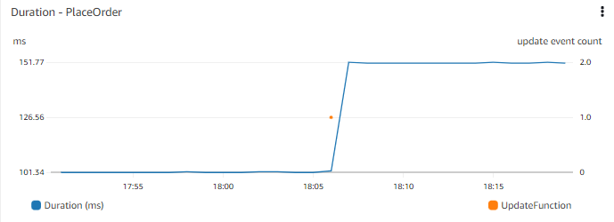
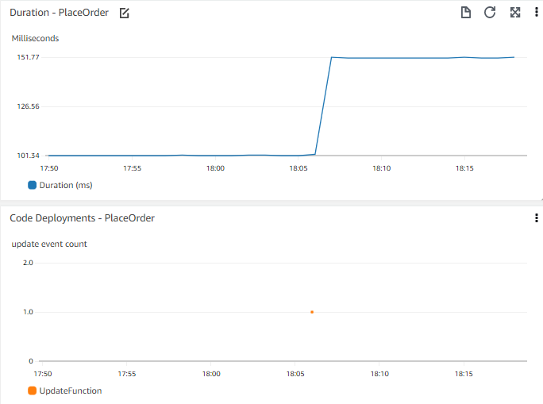

Events¶
What do we mean by events?¶
Many architectures are event driven these days. In event driven architectures, events are signals from different systems which we capture and pass onto other systems. An event is typically a change in state, or an update.
For example, in an eCommerce system you may have an event when an item is added to the cart. This event could be captured and passed on to the shopping cart part of the system to update the number of items and cost of the cart, along with the item details.
Info
For some customers an event may be a milestone, such as a the completion of a purchase. There is a case to be made for treating the aggregate moment of a workflow conclusion as an event, but for our purposes we do not consider a milestone itself to be an event.
Why are events useful?¶
There are two main ways in which events can be useful in your Observability solution. One is to visualize events in the context of other data, and the other is to enable you to take action based on an event.
Success
Events are intended to give valuable information, either to people or machines, about changes and actions in your workload.
Visualizing events¶
There are many event signals which are not directly from your application, but may have an impact on your application performance, or provide additional insight into root cause. Dashboards are the most common mechanism for visualizing your events, though some analytics or business intelligence tools also work in this context. Even email or instant messaging applications can receive visualizations readily.
Consider a timechart of application performance, such as time to place an order on your web front end. The time chart lets you see there has been a step change in the response time a few days ago. It might be useful to know if there have been any recent deployments. Consider being able to see a timechart of recent deployments alongside, or superimposed on the same chart?

Tip
Consider which events might be useful to you to understand the wider context. The events that are important to you might be code deployments, infrastructure change events, adding new data (such as publishing new items for sale, or bulk adding new users), or modifying or adding functionality (such as changing the way people add items to their cart).
Success
Visualize events along with other important metric data so you can correlate events.
Taking action on events¶
In the Observability world, a triggered alarm is a common event. This event would likely contain an identifier for the alarm, the alarm state (such as IN ALARM, or OK), and details of what triggered this. In many cases this alarm event will be detected and an email notification sent. This is an example of an action on an alarm.
Alarm notification is critical in observability. This is how we let the right people know there is an issue. However, when action on events mature in your observability solution, it can automatically remediate the issue without human intervention.
But what action to take?¶
We cannot automate action without first understanding what action will ease the detected issue. At the start of your Observability journey, this may often not be obvious. However, the more experience you have remediating issues, the more you can fine tune your alarms to catch areas where there is a known action. There may be built in actions in the alarm service you have, or you may need to capture the alarm event yourself and script the resolution.
Info
Auto-scaling systems, such as a horizontal pod autoscaling are just an implementation of this principal. Kubernetes simply abstracts this automation for you.
Having access to data on alarm frequency and resolution will help you decide if there is a possibility for automation. Whilst wider scope alarms based on issue symptoms are great at capturing issues, you may find you need more specific criteria to link to auto remediation.
As you do this, consider integrating this with your incident management/ticketing/ITSM tool. Many organizations track incidents, and associated resolutions and metrics such as Mean Time to Resolve (MTTR). If you do this, consider also capturing your automated resolutions in a similar manner. This lets you understand the type and proportion of issues which are automatically remediated, but also allows you to look for underlying patterns and issues.
Tip
Just because someone didn't have to manually fix an issue, doesn't mean you shouldn't be looking at the underlying cause.
For example, consider a server restart every time it becomes unresponsive. The restart allows the system to continue functioning, but what is causing the unresponsiveness. How often this happens, and if there is a pattern (for example that matches with report generation, or high users, or system backups), will determine the priority and resources you put into understanding and fixing the root cause.
Success
Consider delivery of every event related to your key performance indicators into a message bus for consumption. And note that some observability solutions do this transparently without explicit configuration requirements.
Getting your events into your Observability platform¶
Once you have identified the events which are important to you, you'll need to consider how best to get them into your Observability platform. Your platform may have a specific way to capture events, or you may have to bring them in as logs or metric data.
Note
One simple way to get the information in is to write the events to a log file and ingest them in the same way as you do your other log events.
Explore how your system will let you visualize these. Can you identify events which are related to your application? Can you combine data onto a single chart? Even if there is nothing specific, you should at least be able to create a timechart alongside your other data to visually correlate. Keep the time axis the same, and consider stacking these vertically for easy comparison.
